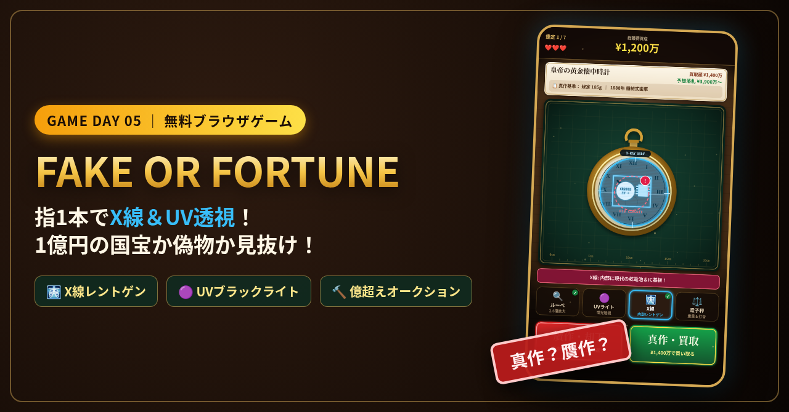

Day 05 投稿ヘルパー（ゲーム5日目：FAKE OR FORTUNE）
闇の骨董鑑定士『FAKE OR FORTUNE』のX・note・YouTube Shorts投稿用データです。
X（Twitter）の投稿画面を開く
note 新規記事作成を開く
X（Twitter）投稿テキスト
コピー
【100日後にバズるゲームを作る男｜5日目】 1888年の懐中時計にX線あてたら中から乾電池出てきたｗ 骨董品の本物・偽物を透視で見抜くゲーム『FAKE OR FORTUNE』を作りました🔍🩻✨ ✅ 指1本でリアルタイムX線・UVブラックライト・2.6倍ルーペ透視 ✅ 電子秤＆打音チェックで全10種の骨董品を鑑定 ✅ 隠し「超国宝」を見抜けば一撃2億円超えオークション！ あなたは偽物を見抜ける？👇 https://kam2525-hub.github.io/note_create_use/games/day05-fake-or-fortune/ #100日後にバズるゲームを作る男 #個人開発 #ゲーム制作
note タイトル
コピー
【ゲーム5日目】指1本でUVライト＆X線透視！1億円の国宝か偽物かを見抜く『FAKE OR FORTUNE（闇の骨董鑑定士）』を作った【無料プレイ可】
note 見出し画像（1280×670）
画像をダウンロード

スマホの場合は画像を長押しして「写真に保存」してください。
note 本文
コピー
100日後にバズるゲームを作る男、5日目です。 これまで1〜4日目はすべてリアルタイムアクション系を作ってきましたが、5日目の今日はジャンルもUIも完全に一新！ アンティーク木製デスクの上で、持ち込まれる謎の骨董品を透視スキャンして真贋を見抜く『FAKE OR FORTUNE（闇の骨董鑑定士）』を作りました！ スマホでもPCでも、インストール不要・ブラウザだけで今すぐ無料で遊べます👇 https://kam2525-hub.github.io/note_create_use/games/day05-fake-or-fortune/ ■ 遊び方：4種の鑑定ツールで偽造を暴き、億超え落札を狙え！ 1. 🔍 2.6倍ルーペ：底面の銘や時計の文字盤・絵画の署名などの微細な偽造刻印を拡大！ 2. 🟣 UVブラックライト：肉眼で見えない蛍光接着剤の亀裂や現代塗料がネオン発光！ 3. 🩻 X線スキャナー：1888年の懐中時計の中の乾電池＆IC基板、名画の下の落書きなど内部を丸裸に！ 4. ⚖️ 電子秤＆打音チェック：規定重量とのズレや、純金・磁器とプラスチックの打音の違いを確認！ ■ 見どころ ・本物の中に眠る「✨超国宝シークレット」を透視で発見すれば、闇オークションで一撃1億〜2億円超え！ ・全10種の手描き多層骨董品（懐中時計・青磁の大壺・ファラオ仮面・油彩名画・妖刀村正・紅ダイヤ・王冠・太古琥珀・マヤ翡翠盤・ストラディバリウス）を収録！ ・全7品チャレンジ＆1ミス即破産の🔥限界エンドレスモード搭載！ ぜひ「SSS 伝説の闇鑑定王」を目指して遊んでみてください！ #100日後にバズるゲームを作る男 #個人開発 #ゲーム制作 #推理ゲーム #無料ゲーム #ブラウザゲーム
YouTube Shorts タイトル
コピー
1888年の懐中時計にX線あてたら中からヤバいもん出てきたｗ【闇の骨董鑑定士】 #Shorts #ゲーム制作
YouTube Shorts 説明文
コピー
スマホ・PCで今すぐ無料で遊べます▼ https://kam2525-hub.github.io/note_create_use/games/day05-fake-or-fortune/ 100日後にバズるゲームを作る男【ゲーム5日目】 『FAKE OR FORTUNE（闇の骨董鑑定士：UV・X線透視×億超えオークション）』 指1本で🔍ルーペ・🟣UVライト・🩻X線・⚖️電子秤を骨董品にかざし、偽物を見抜いて億超え落札を狙う真贋鑑定ゲーム！ あなたは偽物を見抜いて億万長者になれる？記録をコメント欄で教えてください！ #Shorts #ゲーム制作 #個人開発 #骨董鑑定 #推理ゲーム #無料ゲーム #ブラウザゲーム